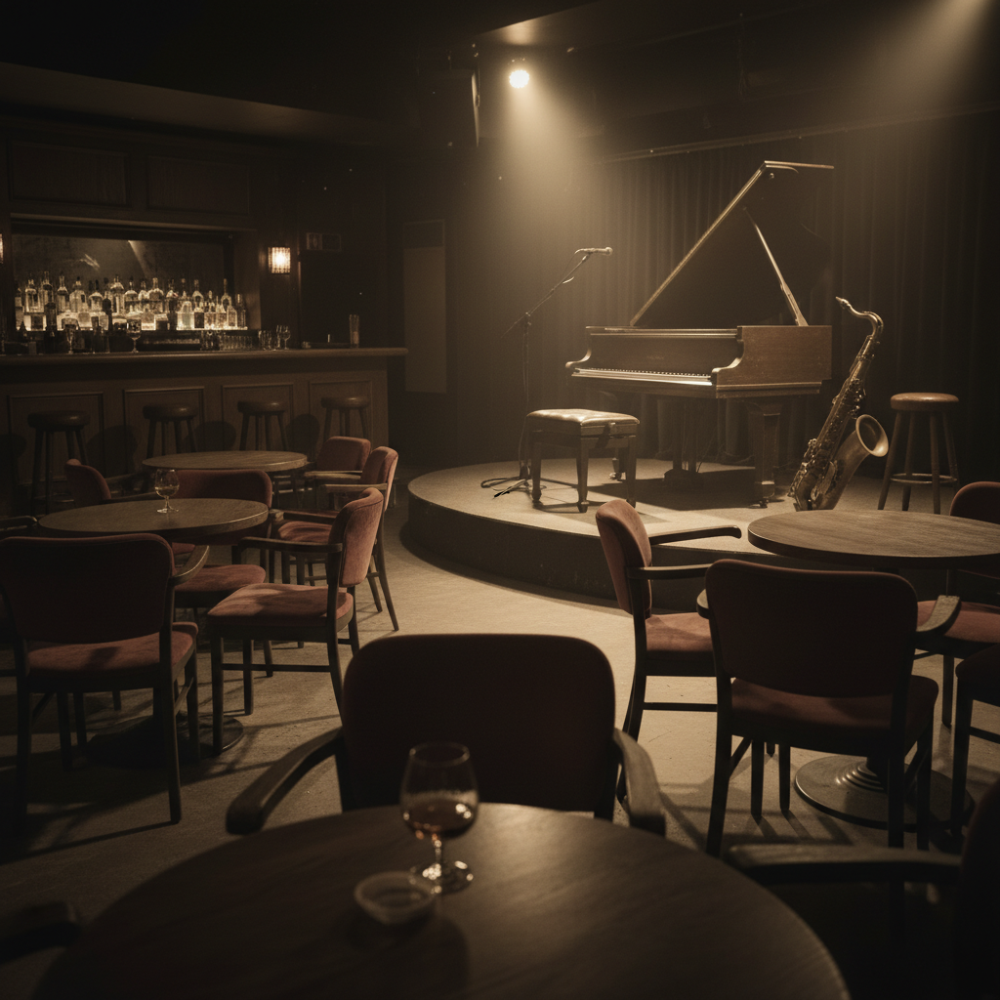

Introduction
In class this week, we used Gemini to analyze audio where we gave it a song to listen to this music and answer the questions below.
- Close your eyes and focus on how it makes you feel.
- What images come into your head as you listen to it.
- What emotions do you experience.
- How would you describe these feelings and images to someone?
I decided to go with a classic song that my grandparents often played. The song is called “La Vie En Rose” by Édith Piaf. I chose it because I felt like it is a very emotional song that has themes of love, longing, and nostalgia. I was curious to see how and if an LLM would be able to derive these feelings without having the experiential or lived experience to know what it felt like. In reality, I was shocked that an LLM could listen to an audio in the first place and this was my first ever time giving an AI a song to listen to. I’m not sure how it is able to picture an image or explain the emotions it feels. Nonetheless, I was surprised and delighted by the output.
What Gemini Said
Here was Gemini’s output.
This music immediately transports me to a different era, full of a gentle, wistful nostalgia.
Images that come to mind:
- A dimly lit, smoky jazz club or a quiet speakeasy from the 1940s or 50s.
- A single spotlight on a singer, her eyes closed, lost in the emotion of the song.
- A rainy evening, looking out a window at city lights, perhaps with a warm drink in hand.
- Old black and white films, particularly romantic dramas where the characters are deeply in love but perhaps face an unspoken sorrow or separation.
- A quiet moment of reflection, looking through old photographs or replaying cherished memories in one’s mind.
- The sound of a vintage record player, with the comforting crackle of vinyl.
Emotions experienced:
- Nostalgia: A deep longing for a past time, a lost love, or a simpler world.
- Melancholy: A sweet, gentle sadness, not despairing but rather reflective and beautiful.
- Tenderness: The music feels incredibly soft and vulnerable, evoking a sense of empathy and warmth.
- Intimacy: It feels very personal, as if the singer is sharing a secret or a profound feeling directly with you.
- Romance: A classic, heartfelt, and perhaps slightly tragic sense of love.
- Peacefulness: Despite the underlying sadness, there’s a calming, almost hypnotic quality to it.
How to describe these feelings and images to someone:
“Imagine you’ve stepped back in time to a classic, smoky jazz club on a quiet, rainy night. The only light comes from the stage, where a singer with a velvety, heartfelt voice is pouring out her soul. The music wraps around you like a warm, slightly sad embrace, filled with the gentle crackle of an old vinyl record.
It evokes a feeling of profound nostalgia and a tender melancholy – like remembering a beautiful, bittersweet love story or gazing at old photographs that bring a tear to your eye. It’s not a despairing sadness, but a deeply romantic and reflective one, imbued with a quiet hope and an intimate sense of longing. You can almost see the slow dance of dust motes in the dim light, and feel the weight of unspoken emotions in the air. It’s timeless, elegant, and deeply moving, like the soundtrack to a cherished memory you didn’t even know you had.”
My Analysis of Gemini’s Response
The first thing I recognized was that Gemini said it was transported to a different era with nostalgia which I would agree with. I liked how it mentioned different era and clocked that this song was old. Nostalgia is a broad term but I can see how it is used in this context. When looking at the images that come to mind, I would disagree about the smoky/dimly lit jazz club. Although the song could have that appeal, it seems a little more elegant rather than snazzy. The 1940s or 50s part was spot on. What I did love was this idea of a single spotlight and the singer closing their eyes to reap in all the emotion. I think that was beautifully said. As for the rainy evening, I am not sure what that might be associated with? It could be something sad or gloom, but what I gather from the song isn’t either of those two emotions.
The best imagery mentioned was the old and white films. I thought that was super unique and very specific to the music I chose. I can also picture black and white romance dramas when I think about this song. The last two, photographs/memories and the vintage record player were also very telling of the scene Gemini was attempting to draw. It made perfect sense with the song and I’d argue it was better than what I could have come up with.
As for the emotions experienced, I agree with all of them and I am shocked how an AI was able to get these emotions from such an emotional, experiental, and song with a lot of feelings. Its quite amazing that even an LLM can takeaway these components and makes the AI feel almost human-like when it lists these emotions experienced. I don’t think I could have made any more perfect of a list.
However, I still disagree with the classic, smoky jazz club. Although the song clould be played in a Jazz club, I think it comes somewhere else for me personally. I also wouldn’t lean too heavily on the reminisce
My Own View
When I listen to La Vie En Rose, I think about my grandparents. I think about themes of deep affection and romance. I think of a city like Paris or New York. I think of a couple dancing together.
But, I also think about departure. A couple splitting apart when a loved one goes off to fight a war. A young couple moving to different cities. A pair spending their last night together before a major change.
Or, just being around loved ones. Spending time with friends and family. The time people get together for the holidays. A joyous celebration.
Gemini’s Image Generation

Looking at these images, I think Gemini did a great job in generating what it described in text. I see the rain, the jazz club, the dim lights, the pictures on the table, etc.
However, in terms of the actual images itself, I don’t agree with them. I don’t think this captures La Vie En Rose. The closest may be the rain photo but the jazz photo could be any jazz song.